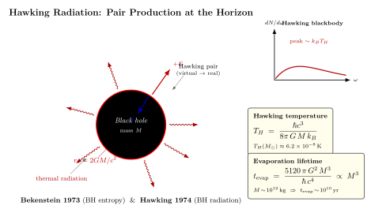

黑洞会蒸发吗?
到这一节为止, 我们对黑洞的描述完全是经典 GR: Schwarzschild 解、视界 $r_s = 2GM/c^2$、Kerr 旋转、能层. 在所有这些图像里, 黑洞是一个完全黑的物体 — 任何东西进得去, 没有东西出得来. 它有一个清晰的事件视界, 视界之外的观察者绝对看不到视界之内的任何东西. 这是经典定理, 是从光锥的因果结构直接推出来的, 没有任何含糊空间.
1974 年, 32 岁的 Stephen Hawking 在 Cambridge 把这个完美的图像砸了一个洞. 他做的事情说穿了不复杂: 他没有改 GR — 时空仍然是 Schwarzschild 的; 他改的是站在那个时空上的场: 不再把它们当作经典场, 而是当作量子场. 然后他问一个具体问题: 在黑洞形成之前处于真空态的量子场, 在黑洞形成之后对远处的观察者看上去是什么? 他的答案是: 一束严格的黑体辐射, 温度 $T_H = \hbar c^3/(8\pi G M k_B)$. 这就是 Hawking 辐射.
这一节我们把这个温度从两条路推出来: 一条是启发式的"虚粒子对"图像 — 直观但不严谨; 一条是 Bogoliubov 变换 — 严谨但抽象. 然后我们代两个数, 看 $T_H$ 在天文上长什么样, 顺便估算蒸发寿命 $t_{\rm evap}\propto M^3$. 最后讨论这件事在物理学里掀起的两个大问题: 黑洞热力学与信息悖论.
一、视界附近的虚粒子对 — 启发式图像
先用一个不严谨但好记的图像建立直觉. 量子场论告诉我们, 真空不是空的: 它充满了虚粒子-反粒子对的瞬时起伏, 由不确定关系 $\Delta E\,\Delta t\gtrsim\hbar$ 允许的能量短暂"借出". 在 Minkowski 时空里, 这些虚粒子对总是借完就还 — 在 $\Delta t$ 内重新湮灭, 净效应为零, 真空看起来还是真空.
现在把视界放进去. 想象一对虚粒子在视界 $r=r_s$ 的外面非常接近视界处产生. 视界的几何效应是: 它强烈地拉开两个粒子. 如果其中一个落入 $r\lt r_s$, 它就再也回不来 — 这一对就无法再湮灭. 借出去的能量必须由别处补上. 通常补的方法是: 落入的那个粒子带的是负能量 (从远处观察者的角度看), 它把黑洞的质量减少 $\Delta M$; 逃出去的那个粒子带的是正能量 $E$, 它跑到无穷远变成一个真实的"出射粒子". 由能量守恒, $E = \Delta M c^2$ 来自黑洞.
这个图像有几个值得讲的细节. (i) "负能量"在 Schwarzschild 视界里是合法的: 视界以内 $r\lt r_s$, 时间分量 $g_{tt}\gt 0$, 也就是说 $t$ 方向是类空方向, 而 Killing 矢量 $\partial_t$ 在那里指向类空, 所以一个静止的"能量" $-p_t$ 可以为负而不违反任何因果律. (ii) "为什么这种事在 Minkowski 真空里不发生" — 因为 Minkowski 没有视界, 所有虚粒子对都能在 $\Delta t$ 内重聚湮灭. 视界的存在打破了对称, 让一对里的两人永远分离. (iii) 这个图像无法预测正确的谱: 它告诉你"会有辐射", 但不告诉你这是黑体, 也不给温度公式.
要拿到 $T_H$, 我们用一个朴素估计. 视界附近的特征长度尺度是 $r_s$, 特征时间 $r_s/c$. 由不确定关系, 这个尺度的能量量子大致是 $E\sim \hbar c/r_s = \hbar c^3/(2GM)$. 把它当作"典型粒子能量" $\sim k_B T$ 来读温度, 数量级上得到
$$ k_B T \sim \frac{\hbar c^3}{GM}. $$
这与 Hawking 的精确公式只差一个 $1/(8\pi)$ 的因子. 数量级对得上, 这给我们的虚粒子对图像一个交叉验证.
二、Bogoliubov 变换 — 严谨的推导
真正的推导走量子场论在弯曲时空上的标准路线. 这里我不展开全套数学, 只把骨架讲清楚.
我们考虑一个引力坍缩的时空: 远过去 ($t\to -\infty$) 是 Minkowski, 一颗恒星正常地存在; 在某个时刻坍缩开始, 物质收缩穿过它自身的 Schwarzschild 半径, 形成视界; 远未来 ($t\to+\infty$) 是稳态的 Schwarzschild 黑洞 + 视界外的辐射场. 我们让一个标量场 $\phi(x)$ 在这个时空上自由演化, 把它放在初始 Minkowski 真空 $|0_{\rm in}\rangle$ 上.
关键事实: 同一个量子场在不同时空区域有不同的"自然"模式分解. 在 $t\to-\infty$ 的 Minkowski 区, 自然模式是平面波 $u_k\propto e^{-i\omega_k t}$ ($\omega_k\gt 0$), 对应粒子由 in-vacuum 的湮灭算符 $a_k$ 定义: $a_k|0_{\rm in}\rangle=0$. 在 $t\to+\infty$ 的渐近区 (远离黑洞), 自然模式也是 $\sim e^{-i\Omega u}$ 那种 (用 $u=t-r_*$ 这种 retarded null 坐标), 对应一组不同的湮灭算符 $b_\Omega$, $b_\Omega|0_{\rm out}\rangle=0$.
两组模式之间的线性变换叫 Bogoliubov 变换:
$$ b_\Omega \;=\; \int d\omega\,\big(\alpha_{\Omega\omega}\, a_\omega \;+\; \beta_{\Omega\omega}\, a_\omega^\dagger\big). $$
$\alpha$ 描述"纯频率混合", $\beta$ 描述"粒子-反粒子混合"; 后者是关键. Hawking 1975 (Comm Math Phys 43:199) 在仔细追踪一个出射模式 (在远未来频率为 $\Omega$) 沿坍缩时空的回溯路径后, 算出
$$ |\beta_{\Omega\omega}|^2 \;=\; \frac{1}{e^{2\pi\Omega/\kappa} - 1}\;|\alpha_{\Omega\omega}|^2,\qquad \kappa=\frac{c^4}{4GM}=\frac{c^2}{2 r_s}, $$
其中 $\kappa$ 是视界处的表面引力. 这个分母 $e^{2\pi\Omega/\kappa}-1$ 是玻色-爱因斯坦分布, 温度
$$ k_B T_H \;=\; \frac{\hbar\kappa}{2\pi} \;=\; \frac{\hbar c^3}{8\pi G M}, \qquad\text{即}\qquad T_H \;=\; \frac{\hbar c^3}{8\pi G M k_B}. \tag{1} $$
这就是 Hawking 温度. 远处观察者把初始的 Minkowski 真空看作一个温度 $T_H$ 的热浴. 公式 (1) 的几个特点值得停下来想:
(a) 反比于质量: 越大的黑洞越冷. 这是反直觉的 — 更多东西聚集在一起反而更冷. 它的根源在 $\kappa\propto 1/M$ — 黑洞越大, 视界处的"引力强度" (在合适的几何意义下) 越小, 起伏越温和. (b) 比热为负: $T_H\propto 1/M$, 所以失去能量 (即 $\Delta M\lt 0$) 让黑洞升温, 加快辐射. 这是黑洞作为热力学体系最离奇的性质 — 它的比热是负的, 与所有正常物质相反. (c) 黑体谱: 玻色-爱因斯坦分布是严格的, 不是近似的. 不过 — 严格说出射谱还要乘"灰体因子"(grey body factor), 是势垒散射的影响, 在低频偏离纯黑体, 但峰值频率与温度仍由 $T_H$ 控制.
三、代数字: 太阳质量 vs 原初黑洞

把数字代进 (1). 取太阳质量 $M_\odot = 1.989\times 10^{30}\,\mathrm{kg}$, $\hbar=1.055\times 10^{-34}\,\mathrm{J\cdot s}$, $c=3\times 10^8\,\mathrm{m/s}$, $G=6.674\times 10^{-11}\,\mathrm{m^3\,kg^{-1}\,s^{-2}}$, $k_B=1.381\times 10^{-23}\,\mathrm{J/K}$. 算
$$ T_H(M_\odot) \;=\; \frac{(1.055\times 10^{-34})(3\times 10^8)^3}{8\pi\,(6.674\times 10^{-11})(1.989\times 10^{30})(1.381\times 10^{-23})} \;\approx\; 6.17\times 10^{-8}\,\mathrm{K}. $$
这是一个极其冷的物体 — 比当今宇宙微波背景温度 $T_{\rm CMB}\approx 2.725\,\mathrm{K}$ 低八个量级. 这意味着: 真实存在于宇宙里的恒星质量黑洞 (LIGO 观测的 $\sim 30 M_\odot$ 等) 不仅没在蒸发, 反而在吸 CMB 光子吸热 — 在当前宇宙温度下, 它们是接受热的一端. 只有当宇宙因加速膨胀冷到 $T_{\rm CMB}\lt T_H\sim 10^{-8}$ K 时 (这要等大约 $10^{12}$ 年后), 它们才开始净辐射蒸发.
但有一类黑洞从一开始就比 CMB 热: 原初黑洞 (Primordial Black Holes, PBH), 大爆炸后早期宇宙密度起伏直接坍缩生成的小黑洞. 取 $M = 10^{12}\,\mathrm{kg}$ (大约一颗小山的质量, $r_s \sim 10^{-15}$ m, 比质子小得多):
$$ T_H(10^{12}\,\mathrm{kg}) \;=\; T_H(M_\odot)\cdot\frac{M_\odot}{10^{12}\,\mathrm{kg}} \;\approx\; 6.17\times 10^{-8} \cdot \frac{1.989\times 10^{30}}{10^{12}}\,\mathrm{K} \;\approx\; 1.2\times 10^{11}\,\mathrm{K}. $$
这相当于 $k_B T_H\approx 10\,\mathrm{MeV}$, 比电子的静止质量 0.511 MeV 高一个量级. 在这个温度下, 黑洞辐射不只是光子, 还会把所有质量 $\lt k_B T_H$ 的粒子 (电子-正电子对、$\nu$、最后甚至夸克) 一并发射出来.
蒸发寿命怎么算? 用 Stefan-Boltzmann + 黑洞作为热源. 黑洞的视界面积 $A=4\pi r_s^2 = 16\pi G^2 M^2/c^4$. 它向外辐射的功率 $P\propto A\,T_H^4 \propto M^2 \cdot M^{-4} = M^{-2}$. 由 $\dot M c^2 = -P\propto -1/M^2$ 即 $M^2\,\dot M\propto -1$, 积出
$$ t_{\rm evap} \;=\; \frac{5120\pi G^2 M^3}{\hbar c^4}. \tag{2} $$
三次方关系是非常陡的尺度律: 大黑洞蒸发慢得不像话, 小黑洞蒸发快得不像话. 代 $M = 10^{12}\,\mathrm{kg}$,
$$ t_{\rm evap} \;\approx\; \frac{5120\pi\,(6.674\times 10^{-11})^2\,(10^{12})^3}{(1.055\times 10^{-34})(3\times 10^8)^4} \;\approx\; 4.4\times 10^{17}\,\mathrm{s} \;\approx\; 1.4\times 10^{10}\,\mathrm{yr}. $$
这恰好等于当今宇宙的年龄! 也就是说, 如果大爆炸之初真有 $\sim 10^{12}$ kg 量级的原初黑洞产生, 它们正在我们这个时代正好蒸发完. 蒸发末期是一个剧烈的"爆裂": 最后 1 秒内辐射约 $10^{30}$ J 的能量, 主要是高能 $\gamma$ 射线, 峰值能量在 GeV 量级. Fermi-LAT、HESS、CTA 等高能 $\gamma$ 巡天就是在搜寻这种"PBH 蒸发末期闪光". 至今无确认探测, 由此卡到 PBH 在暗物质里的份额上限. 对照, 太阳质量黑洞的蒸发寿命 $t_{\rm evap}(M_\odot) \approx 10^{67}$ 年, 远远超过任何可观测时段.
四、Bekenstein 熵, 信息悖论, 历史
Hawking 辐射的发现被一个先在的提案触发. 1972-73 年, 普林斯顿研究生 Jacob Bekenstein 在 Wheeler 的指导下提出: 黑洞应该有熵, 与视界面积成正比, $S_{\rm BH}\propto A/\ell_P^2$ ($\ell_P=\sqrt{\hbar G/c^3}$ 是 Planck 长度). 他的理由是热力学的: 当一个热气体落入黑洞时, 整个宇宙的熵看起来减少了, 这违反第二定律 — 除非黑洞自己有熵把它吸收了. Bekenstein 估算这个比例系数大致是 $1/(4\ell_P^2)$, 但他自己不能从微观计数推出这个数.
当时大多数 GR 学者 (包括 Hawking) 反对 Bekenstein 的提议. 反驳是: 如果黑洞有熵 $S$, 它就有温度 $T=\partial M/\partial S$, 那它就该辐射 — 但黑洞按定义不辐射, 矛盾, 故 Bekenstein 错. Hawking 设法严格论证最后一句, 即"按经典 GR 不辐射". 1973 年他在莫斯科与 Zel'dovich、Starobinsky 讨论到旋转黑洞的"超辐射"现象 (Penrose 过程的量子版本) — 他开始猜测: 也许加进量子场, Schwarzschild 黑洞也辐射? 1974 年初他完成计算 — 反过来证明了 Bekenstein 是对的. 他在 1974 年 3 月的 Nature 短信《Black hole explosions?》里第一次公开宣布; 1975 年 Comm Math Phys 上发表了详细推导.
把 (1) 与 Bekenstein 熵 $S=k_B A/4\ell_P^2$ 配上, 黑洞热力学第一定律 $dM\,c^2 = T_H\,dS_{\rm BH}$ 自动满足 — 这告诉我们: 视界面积是熵 这件事不是类比, 它是真的. 把 $A$ 代入得 $S = 4\pi G M^2 k_B/(\hbar c)$. 太阳质量黑洞的熵
$$ S(M_\odot) = \frac{4\pi G M_\odot^2 k_B}{\hbar c} \approx 1.5\times 10^{54}\,k_B, $$
大约相当于 $10^{77}$ 个 bit — 比我们日常想象的任何热力学熵都大得多.
但这个图像立刻撞上一个深刻的难题: 信息悖论. 把一本写满信息的百科全书丢进黑洞, 假如黑洞最终完全蒸发成纯热辐射 (黑体谱不携带任何关于初始物质细节的信息), 那本百科全书的信息去哪了? 量子力学要求演化是幺正的 — 信息必须保留. 但 Hawking 的原版计算表明: 蒸发后的辐射只依赖于 $M$、$J$、$Q$ 三个数 (无毛定理), 与你扔进去的是百科全书还是垃圾完全无关. 1976 年 Hawking 因此宣称: 量子力学的幺正性在引力下崩溃了. 这个论点引发了量子引力领域三十多年的激烈辩论.
1997 年 Maldacena 的 AdS/CFT 对偶 (反 de Sitter 时空中的引力 = 边界共形场论) 给出的结果是 — 幺正性必须保留, 因为对偶的 CFT 是显然幺正的. 这意味着 Hawking 的原版计算在某处遗漏了细微的关联. 2019-2020 年的"Page 曲线"工作 (Penington, Almheiri 等) 用引力路径积分中"复制虫洞"的鞍点表明: 在蒸发的后半段, Hawking 辐射的纠缠熵确实下降, 信息确实出来. 但具体怎么出来 — 在哪个时刻被编码进辐射的哪些自由度 — 仍然没有完全清楚的图像. 这是当前理论引力最活跃的方向之一.
历史上的 Bekenstein 与 Hawking 后来都接受了对方的观点: Bekenstein 的面积熵成了正确公式, Hawking 1974 的辐射结果让他自己被列在量子引力创始人的名单上. 1997 年 Hawking 与 Kip Thorne、John Preskill 关于信息悖论的"赌局"被广泛报道, 2004 年 Hawking 公开承认输掉这场赌 (信息守恒). 这是 GR 与量子力学迄今最戏剧性的一次碰撞 — 它告诉我们: 黑洞不是经典几何里的洞, 它是一个微观系统, 有温度、熵、自由度数 (大约 $A/4\ell_P^2$), 将来某种量子引力理论必须把这些自由度数到位.
小结
这一节我们把 1973-74 年 Bekenstein-Hawking 那场"黑洞会不会蒸发"的辩论从两条路重做了一遍. 启发式的虚粒子对图像告诉我们: 视界附近的真空起伏被几何不可逆地拉开, 一个落入 (带走负能量, 让 $M$ 减小), 一个逃逸成为辐射. 严格的 Bogoliubov 变换告诉我们: 远处观察者把初始 Minkowski 真空看作温度 $T_H = \hbar c^3/(8\pi G M k_B)$ 的玻色-爱因斯坦热浴 — 这就是公式 (1). 由 Stefan-Boltzmann 推出蒸发寿命 $t_{\rm evap} = 5120\pi G^2 M^3/(\hbar c^4)$ — 公式 (2). 代入数字: 太阳质量黑洞 $T_H \approx 6.17\times 10^{-8}$ K, 远低于 CMB 2.725 K, 实际上正在吸热而非蒸发; 原初黑洞 $M\sim 10^{12}$ kg 给出 $T_H\sim 10^{11}$ K 与 $t_{\rm evap}\sim 1.4\times 10^{10}$ 年, 恰好是宇宙年龄, 是 Fermi-LAT 等 $\gamma$ 巡天搜寻的对象. Hawking 辐射的发现把黑洞从"几何上的洞"变成"有温度、有熵、有微观自由度的热体系" — 它的熵是 $S = k_B A/4\ell_P^2$ (Bekenstein-Hawking 公式, 下一节展开). 但黑体辐射不携带初始物质的信息, 这导致信息悖论: 量子力学的幺正性与无毛定理冲突. AdS/CFT 与最近的 Page 曲线工作支持幺正性保留, 但具体机制仍未完全清楚 — 这是 21 世纪物理学最尖锐的悬案之一. 下一节我们把"$S\propto A$"展开到黑洞热力学的四定律.
▲